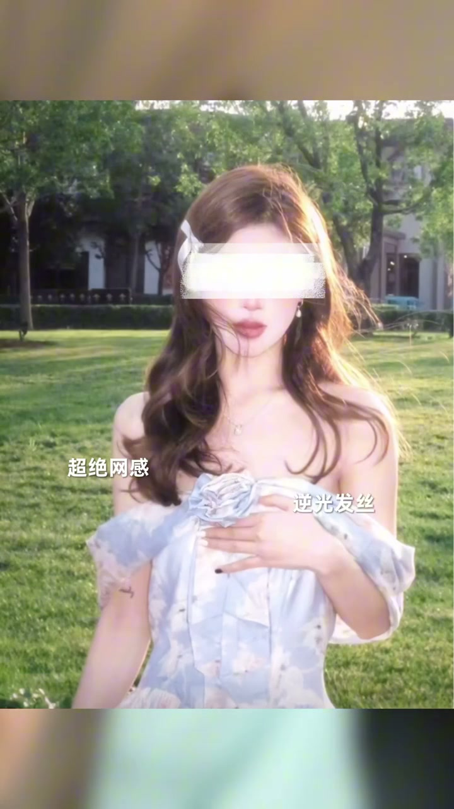
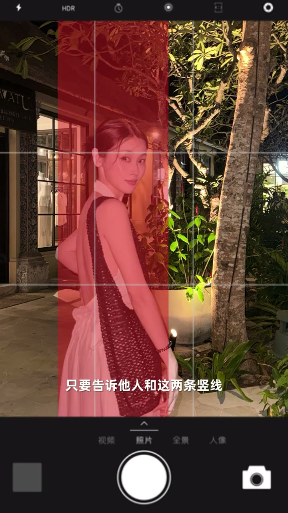

3句口诀，包你出片
00:00从来没拍过照、对相机很陌生的助理，在超快速集训下出了几张网图。有几个无比简单的培训核心，教人一遍就会。
00:19原则：不保证出人生照片，但保证在每个景点拍的照片都能皮（pǐn）而且很好皮。第一个口诀：一光二景三人。
口诀1：光
00:30不会拍照的人最大的问题：不知道站在哪。阳光在这边，他却站到你正后方开拍。光最简单的记法：你迎着光，让他背着光，站在光过来的方向——不会大黑脸逆光，也不会阴阳脸。
00:45拍摄时间最好是早上7点到9点、下午4点到6点。如果出门不可避免要在顶光下拍照：找一个阴阳交界处，你站在阴面、他站在阳面，光还是冲着你的方向。
00:56网上教的超绝逆光、发丝拍照，新手很难掌握，不要轻易尝试。

口诀2：景
01:05二景就记住一个口诀：景乱人大、景美人让景。一个照片除了你以外，不超过三个元素——比如天、海、沙滩。这样照片干净、好构图。
口诀3：人长在九宫格上
01:19第三个口诀：人长在九宫格上。对新手不要教“放在哪个区域”，让他学杂了不如不学。最好用的步骤：拿出手机，打开九宫格。
01:31把手挡住最上面的三分之一——脑袋出现在最上面，涉及畸变（很难P也很难解决）；人放太下面，就只有人大人小、景大景小的问题。
01:48第二，把人放在这两条竖线上，人和竖线平行——十有八九照片能用。为什么放竖线不放中间？同张照片放中间是板着的、没氛围感；挪到竖线位置氛围感一下就出来了。但不要放到非常靠边的位置（容易畸变），可以靠后期裁。

进阶：四个交汇点
02:16第三个进阶、容易出神图的方法：把人放在四个交汇点上，随便利用上两个点——脑袋站一个点、腿站一个点。竖着的、横着的、截着的都可以出图。
02:27自拍想好看也是这四个点：把中间这个格让出来，让你的脸出现在循环（交汇）位置——照片特别有生活化、空间感。不要动不动就举起手机拍脸，那样拍不出氛围感。
肌肉记忆+灵动视角
02:44最后保证正常出片：让它形成肌肉记忆——手机一旦抬起来，就向自己扣一点（微微内倾），不要扣太多，让人在照片里呈现正三角形的关系。
02:56想要灵动、刁钻角度：找一个人打开前置给你举着，在你自己看得到的情况下让他按快门——这种清奇又灵动的视角全是这么拍的。嫌麻烦就用蓝牙遥控器+手机支架。